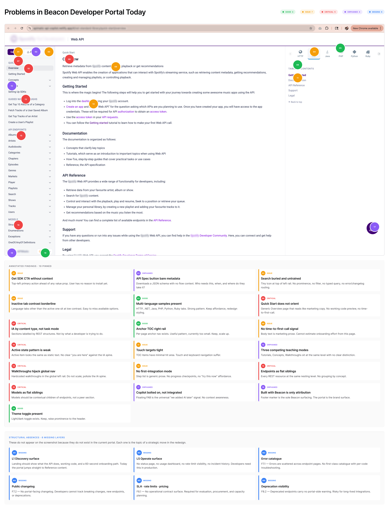
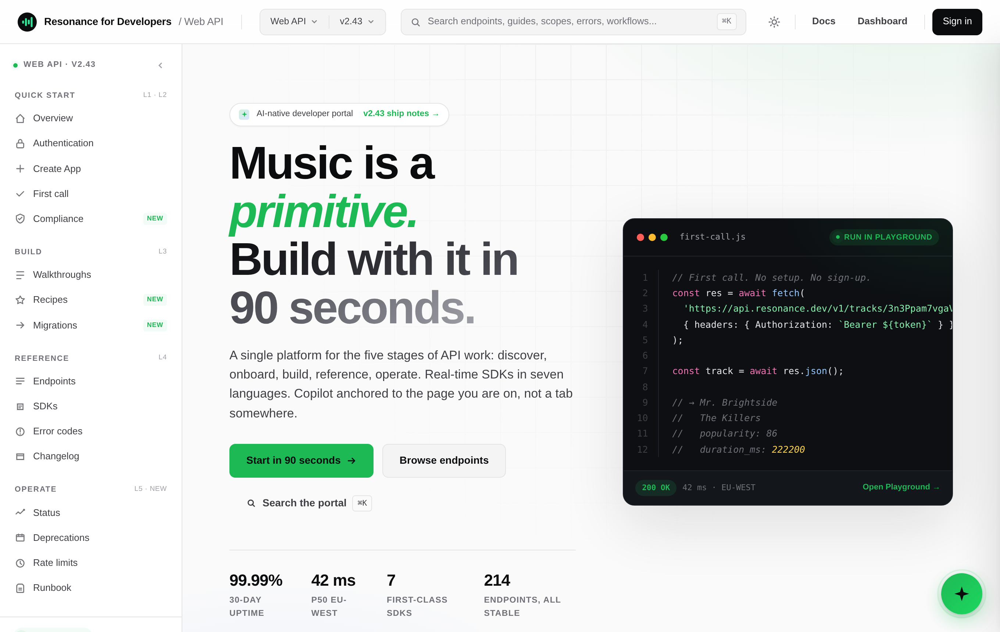
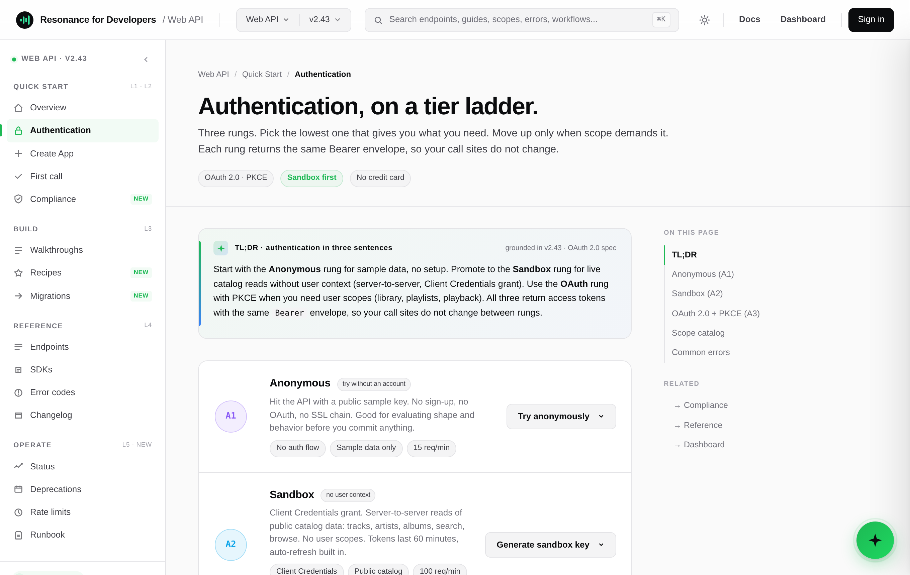
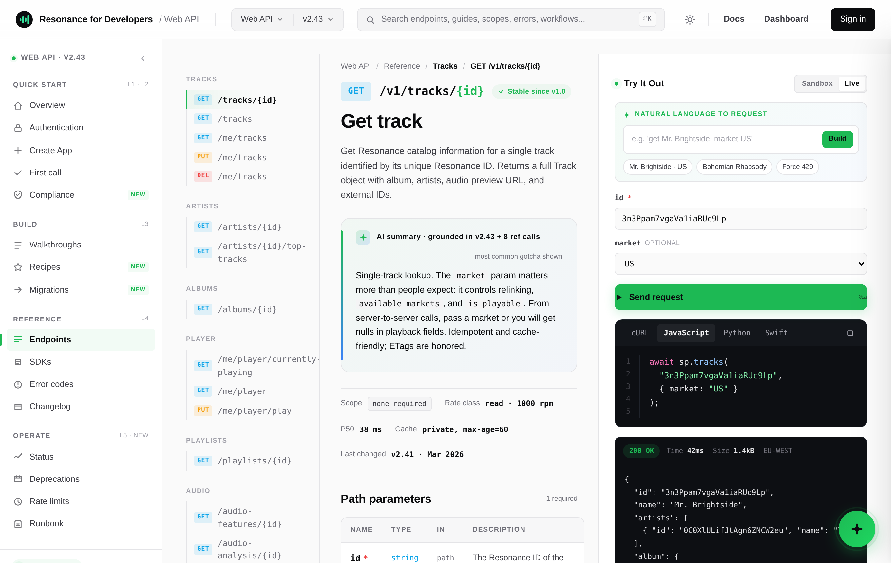
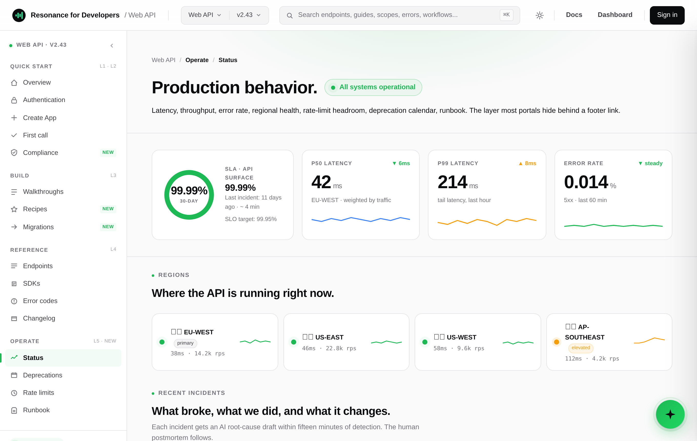
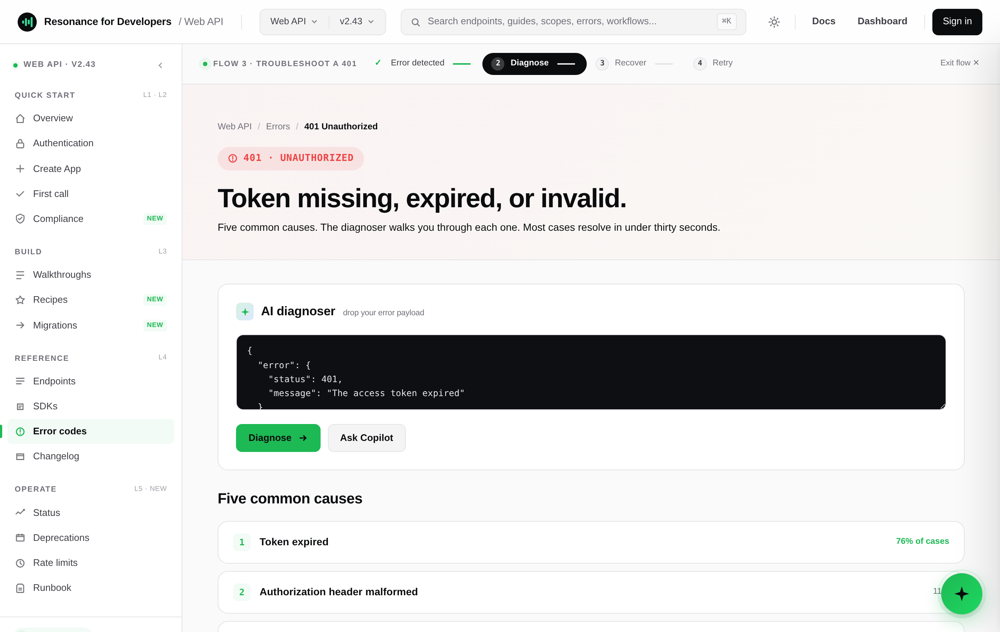

A portal is five jobs, not one.
In 2026 a developer portal is not a documentation site with a styled left rail. It is a five-job surface, and developers expect every job reachable from one entry point without learning the portal's taxonomy first.
Developers move through five cognitive layers when they work with an API: Discover (can this solve my problem), Onboard (get me to my first call), Implement (help me ship the feature), Reference (be authoritative when I am precise), and Operate (tell me what is happening in production). The portal under audit served one of them well, Reference, and left the other four missing or collapsed.
This is the operating frame for everything that follows. Every recommendation is judged twice: as the shipped artifact a developer sees, and as a structural default the platform can actually generate.
Three forces make this urgent, and each is documented. AI-assisted development has made the portal a citation surface: the Postman 2025 State of the API report finds 89 percent of developers use generative AI daily and 51 percent of organizations have deployed AI agents that consume APIs autonomously (Postman, 2025). Operational transparency, status and changelogs and deprecations, became table stakes. And self-serve procurement put architects on the portal directly, with go or no-go criteria the marketing site cannot answer.
A five-stage systems investigation, not a comment trail.
Seven methods, each a distinct kind of evidence, triangulated against 36 public sources. Each one is a link you can open, not a claim you have to trust.
Forty findings, weighted by severity.
The distribution matters more than the count. The Critical findings concentrate at the layer seams, not on the leaf pages.
The forty findings, on the board.
The same audit as a single annotated surface: every finding pinned to the live portal where it occurs, then catalogued below by category and severity. The clusters fall on the seams between layers, which is the argument for re-layering rather than re-skinning.

Six findings carry the redesign.
- The landing hero has no working code.A first-time visitor cannot tell in ten seconds what the API does in code. The absence deletes the Discover layer entirely. (Critical)
- The only path to a real response is full OAuth.Four credential fields, zero inline guidance, no sandbox. The abandonment cliff. (Critical)
- The response panel is empty until Try-It.It reads "no example available." Examples are the single most-requested doc element at 70 percent (SmartBear). (Critical)
- Walkthroughs are orphaned.Endpoint pages do not link to the walkthroughs that use them, and walkthrough steps do not deep-link to reference. (High)
- AI is a bolted-on widget.The copilot has no page context, no abstention discipline, and no path back to source. (High)
- The entire operational layer is missing.No status, deprecations, rate-limit doc, webhooks, usage logs, or runbook. The largest single finding. (Critical)
The confidence curve.
The most concise summary of the audit. A representative integrator's confidence rises through Reference, then drops to baseline at Operate because the layer does not exist. The redesign flattens that dip.
Eight persona profiles, six people.
Three mode personas span the lifecycle. Five extremes pressure-test the edges, two of them the same people in a second mode. The pattern that matters: three of them break at the same place, Operate, which does not exist.
Read the people in full: the three lifecycle personas, the five extremes, and the swim-lane comparison.
Designing for the extremes.
The mode personas describe how a developer behaves. They do not describe how that behaviour changes at the edges of expertise. So I placed five people on a single axis, developer expertise and API sophistication, and made the redesign defend itself at both ends. The technique is from inclusive design: solve the edges and the middle comes free; fail the edges and the design is invisibly hostile to both.
Why the edges, for this product specifically: by 2027 most organisations run on low-code (Gartner: 65%) and Postman's 2025 report found 51% of organisations deploying AI agents, so non-engineers like Aria increasingly land on developer portals. The moat is being the whole portal experience, and that shows up at the edges. A surface an architect respects and a no-code builder can still navigate is one nobody else delivers.
Plain English, or she escalates.
Her Zapier flow returns a 401 and drops her at the docs. She reads the prose, skips every code block, and asks the copilot "why isn't this working?". If the answer leads with a curl command, she is gone.
Implication: a by-task entry path, plain-English error explanations above the status-code detail, and a copilot that detects non-developer context and drops the code sample.
The spec, the source, the changelog.
He downloads the OpenAPI spec first, reads the SDK source on GitHub, and reads the changelog backwards six months. Marketing pages disguised as docs and "just trust us" answers on rate limits end the evaluation.
Implication: a for-architects path with raw spec download, deprecation history, SDK source links, and explicit rate-limit, retry, and webhook semantics.
The two edges, lens by lens.
The same profile applied to both ends. The distance between these columns is the range one portal has to serve.
| Lens | Aria, citizen integrator | Reza, platform engineer |
|---|---|---|
| Technical confidence | Very low, "not technical" | Very high, designs APIs |
| Code reading fluency | Skips code blocks | Reads SDK source |
| OAuth / auth fluency | Never set one up | Designs OAuth flows |
| AI assistant trust | High, a friendly explainer | Low, distrusts summaries |
| Risk tolerance | Will not click "revoke" | Absorbs risk for 200 engineers |
| Trusts | Plain language and visuals | The spec, the source, the changelog |
Two competitor studies, not one.
The first asks how good each portal is, dimension by dimension. The second asks how each one layers the five jobs, which is the question the redesign turns on.
Study one · seven portals, where Beacon sits.
Beacon leads on its reference and SDK foundation and trails on nearly everything around it. The radar reads three at a glance; the matrix carries the rest.
| Portal | Landing | Onboarding | Reference | Operational | AI | Navigation |
|---|---|---|---|---|---|---|
| Stripe | Strong | Strong | Strong | Strong | Strong | Strong |
| Twilio | Strong | Strong | Strong | Strong | Strong | Strong |
| Claude | Strong | Strong | Strong | Strong | Strong | Strong |
| Google Workspace | Strong | Strong | Strong | Strong | Strong | Mid |
| Figma | Strong | Mid | Strong | Mid | Mid | Strong |
| Postman | Mid | Strong | Mid | Mid | Strong | Mid |
| ClickUp | Mid | Mid | Mid | Weak | Strong | Mid |
| Beacon (today) | Weak | Weak | Strong | Weak | Mid | Weak |
The single takeaway: borrow the proven moves. Claude's lifecycle IA, Twilio and Google's operational surfaces, Postman-grade AI-agent affordances. Beacon already bundles portal, SDK, copilot, and playground; the redesign makes that integration visibly superior, not just present.
Study two · how each portal layers the five jobs.
Five distinct layering archetypes emerged across the seven. Beacon fits none cleanly today; the target is a hybrid, plus a sixth that none of them attempt.
| Archetype | Seen in | Verdict for Beacon |
|---|---|---|
| Capability-first three-column | Stripe | Adopt the spine |
| Product-line + use-case dual nav | Twilio | Not a fit; single API |
| Choose-your-surface | Figma, Claude | Adopt for modes |
| App-grid enterprise hub | Google Workspace | Over-built here |
| Task-mode card grid | Postman | Beacon is a degraded version of this today |
| AI copilot as a navigation layer | None of the seven | Beacon's distinctive opportunity |
How three personas fare across every portal.
The clearest competitive signal in the study: Beacon today is red for all three, where Stripe and Claude are green.
| Portal | Maya, evaluator | Diego, integrator | Sara, maintainer |
|---|---|---|---|
| Stripe | Green | Green | Green |
| Claude | Green | Green | Green |
| Twilio | Amber | Green | Amber |
| ClickUp | Green | Green | Amber |
| Google Workspace | Amber | Amber | Green |
| Figma | Green | Amber | Amber |
| Postman | n/a | Green | n/a |
| Beacon (today) | Red | Red | Red |
The information architecture is the load-bearing wall.
Every other finding sits on top of the IA. The current taxonomy is organized by content type. The redesign reorganizes around developer task and rebuilds the three missing layers.
Six principles, each earned by a finding.
- Task-oriented navigation.Read, Try, Integrate, Troubleshoot, Operate as entry points. Content type lives underneath.
- Operational continuity.Status, changelog, errors, deprecations as one named Operate surface, not buried footer links.
- Progressive onboarding.A 60-second working-code preview, sandbox by default, first call under the five-minute exceptional threshold (WSO2 benchmark).
- Contextual assistance.AI knows the page, cites sources, and abstains on undocumented questions. A bounded layer, not a widget.
- Scalable architecture.Walkthroughs are overlays that preserve the global nav. Models are contextual children of endpoints.
- Implementation-aware flows.SDK signature, request, response shape, error semantics, and auth context, all on the endpoint page.
Five strategic moves. Remove any one and the argument falls.
Each move either creates a missing layer or fixes the entry into the next. None is a re-skin. Three serve every developer behavior at once.
Hero working code.
The landing page shows a real call and its response above the fold, with a capability picker for the five common patterns. Credibility comes from specificity: a real track ID, both halves of the contract visible.
Tier-ladder authentication.
Authentication becomes a gradient: Anonymous, Sandbox, OAuth. The same Bearer envelope across all three, so call sites never change. A code-shy evaluator gets a path to yes before committing anything.
Compliance moved pre-authentication.
DPA, SOC 2, GDPR, data residency, and audit-log access live in Quick Start, reachable without sign-up, with a deprecation calendar beside them. Evaluation moves from after onboarding to before it.
Walkthroughs rescued from orphan.
Walkthroughs join recipes and migrations in a Build group, cut from ten potential to four canonical entries, each cross-linked to the reference for every endpoint it calls.
Operate as a new layer.
A new Operate group at portal root: Status, Deprecations, Rate limits, Webhooks, Logs, Runbook. Status is the headline page. Three personas break here today and all three resolve at surfaces that did not exist. That compression is what reads as senior.
Three gate decisions, documented.
Five surfaces that carry the redesign.
Not a screenshot dump. Five screens, each a move made visible, with the decision behind it. The worked API is Resonance, so a first call returns a track.





A system the portal runs on, not a coat of paint.
The redesign ships on tokens, not Figma assets. Every value is expressible in the portal's generator config and themable per brand. A few of the load-bearing ones, shown directly.
Color, by meaning.
Two systems do the work: a layer palette that color-codes the five jobs, and an HTTP-method palette that makes endpoints and states scannable.
Type, three voices.
Display for headlines and numbers, Inter for reading, mono for anything a developer would type or copy. Labels track wide and uppercase; headlines track tight.
Tokens and primitives.
| Token | Value | Use |
|---|---|---|
| --bg | #050706 | Portal background |
| --surface | #0d110f | Cards, code rail |
| --accent | themable | Primary brand |
| --ink | #F4F7F5 | Primary text |
| --m-get | #34E29B | GET method pill |
| --m-post | #5B8DEF | POST method pill |
Sixteen primitives cover the full surface. Each is themable; the 8-point spacing grid, the method-color semantics, and the accessibility minimums are not. You can see them live in the hi-fi artifact.
A roadmap, not a wishlist.
Some moves are buildable today; some need infrastructure that does not exist yet. Phasing is what separates a redesign that ships from a concept reel.
| Wave | What ships |
|---|---|
| Wave 1 | Four-group IA, hero working code, tier-ladder auth, compliance pre-auth, walkthroughs in Build, reference 3-pane with pre-populated responses, Operate (status, deprecations, rate limits, runbook), changelog, SDK and version picker. |
| Wave 2 | Per-tenant rate-limit headroom in Dashboard, AI summary per page (content-grounded), anchored copilot drawer, status pipeline on real incident feeds, command-K search. |
| Wave 3 | AI root-cause drafts at scale, natural-language to Try-It, AI explain on hover, per-tenant telemetry (logs, audit streaming, webhook history). |
Every move earns its place across more than one behavior.
| Strategic move | Evaluators | Implementors | Operators |
|---|---|---|---|
| Hero working code | yes | partial | no |
| Tier-ladder auth | yes | yes | no |
| Compliance pre-auth | yes | no | no |
| Walkthroughs rescued | yes | skim | no |
| Operate as a new layer | partial | yes | load-bearing |
| Reference + playground | yes | load-bearing | no |
Validated against a developer who does not behave.
That reframed the thesis from five stages for everyone to four behaviors at different surfaces: Evaluators open once and decide, Implementors live in the IDE and open the portal twice, Operators show up when something is wrong, and AI-augmented assistants read the docs on the developer's behalf. The five-layer map still holds; the headline shifts to the portal being the trusted operational and reference surface that the assistant tools cannot replace.
The leverage, stated honestly.
This work defined and proved a direction. These are audit leverage and targets, not shipped metrics. That distinction is the point.
What it taught me.
The argument has to survive users who do not behave the way it predicts. The engineer reframed five stages into four behaviors, and the sharper line is more defensible because it admits the messier reality. Execution depth can also obscure judgment: a 32-screen prototype proved the architecture and was then deliberately cut from the headline, because curation shows judgment where output shows only effort.
Honest gaps remain. The reference playground was not validated with multiple implementors, and the Operate visibility test was not run; the engineer not visiting Operate is the predicted behavior, but predicted is not validated.
- Postman, 2025 State of the API Report. postman.com/state-of-api
- Stack Overflow, 2025 Developer Survey. survey.stackoverflow.co
- SmartBear, State of Software Quality: API. smartbear.com/state-of-software-quality/api
- WSO2, API Management resources and benchmarks. wso2.com/library
- Gartner, low-code and developer-experience forecasts. gartner.com